|
Open Archives Initiative Object Reuse and Exchange |
|
Open Archives Initiative Object Reuse and Exchange |
Open Archives Initiative Object Reuse and Exchange (OAI-ORE) defines standards for the description and exchange of aggregations of Web resources. This document describes the abstract data model that is the foundation for these standards. This model is conformant with the Architecture of the World Wide Web [Web Architecture] and leverages concepts from the Semantic Web including RDF descriptions [RDF Concepts] and Linked Data [Linked Data Tutorial].
This specification is one of several documents comprising the OAI-ORE specifications and user guides. The intended audience for this document is implementers that have an understanding of Semantic Web Concepts. Readers that want a high-level understanding of the motivation for ORE, and of the solution it provides should read the ORE Primer.
1. Introduction
1.1 Notational Conventions
1.2 Namespaces
2. Foundations
3. Data Model Entities
3.1 Aggregation
3.2 Aggregated Resource
3.3 Resource Map
3.4 Proxy
4. RDF Graph of a Resource Map - Basics
4.1 Relationship between a Resource Map and an Aggregation
4.2 Metadata about the Resource Map and Aggregation
4.3 Aggregated Resources and the Aggregation Graph
4.4 Relationships between the Aggregation and Similar Resources
4.5 Relationships to other Resources and Types
5. RDF Graph of a Resource Map - Advanced
5.1 Asserting that an Aggregated Resource is a constituent of another Aggregation
5.2 Nesting Aggregations
5.3 Proxies for Aggregated Resources
5.3.1. Proxies: Relationships among Aggregated Resources
5.3.2. Proxies: Externally asserted relationships to Aggregated Resources
5.3.3. Proxies: Lineage of an Aggregated Resource
6. Structural Constraints on a Resource Map
7. References
A. Acknowledgements
B. Change Log
The Architecture of the World Wide Web [Web Architecture] uses the term Resource to refer to any item of interest. Some web content, such as a stand-alone HTML document, is contained within one Resource. But frequently a logical unit of web information is actually an aggregation of Resources. Examples of these aggregations are:
These aggregations exhibit the following characteristics:
A mechanism to associate identities with these aggregations and describe them in a machine-readable manner would make them visible to Web agents including browsers and crawlers. These machine-readable descriptions could then be the basis of user interfaces, allowing users to navigate and manipulate the aggregations. Some example applications and contexts where "aggregation-awareness" might be useful include:
This document describes the Open Archives Initiative Object Reuse and Exchange (OAI-ORE) data model for the description and exchange of aggregations of Web resources, named Aggregations. OAI-ORE introduces the notion of Resource Maps that describe an Aggregation. A Resource Map describes an Aggregation: it asserts the finite set of constituent resources (the Aggregated Resources) of the Aggregation, and it can express types and relationships pertaining to the Aggregation and its Aggregated Resources. This data model conforms to the concepts defined in the Architecture of the World Wide Web [Web Architecture].
The ORE Model can be implemented in a variety of serialization formats. The details of these formats are described in companion ORE documents. The nature of a particular serialization format and its respective expressiveness may affect the details of the mapping from the model to the implementation. This mapping is described in detail in each serialization specification.
The keywords "MUST", "MUST NOT", "REQUIRED", "SHALL", "SHALL NOT", "SHOULD", "SHOULD NOT", "RECOMMENDED", "MAY", and "OPTIONAL" in this document are to be interpreted as described in RFC 2119 [IETF RFC 2119].
The use of fonts is as follows:
this font. Predicates have a non-capitalized
first-letter but are subsequently camel-cased to indicate word separation.
Classes have a capitalized first letter and are then camel-cased
to indicate word separation.This specification uses the following namespaces and prefixes to indicate those namespaces:
| Prefix | Namespace URI | Description |
|---|---|---|
dc |
http://purl.org/dc/elements/1.1/ |
Dublin Core elements |
dcterms |
http://purl.org/dc/terms/ |
Dublin Core terms |
| foaf | http://xmlns.com/foaf/0.1/ | Friend of a Friend |
ore |
http://www.openarchives.org/ore/terms/ |
ORE vocabulary terms |
owl |
http://www.w3.org/2002/07/owl# |
OWL vocabulary terms |
rdf |
http://www.w3.org/1999/02/22-rdf-syntax-ns# |
RDF vocabulary terms |
| rdfs | http://www.w3.org/2000/01/rdf-schema# | RDF Schema |
The ORE Data Model builds on the following foundation technologies and architectures.
Readers unfamiliar with these technologies are encouraged to refer to reference documents for each. A brief introduction to the relevant aspects of these technologies is also available in the ORE Primer.
The ORE Abstract Data Model includes the entities that are described in the remainder of this section.
An Aggregation is a Resource of
type ore:Aggregation that is a set of other
Resources. The type ore:Aggregation is associated with a
Resource via an assertion by at least one Resource Map. The association between a
Resource Map and an Aggregation is described in a section 4.1.
This specification uses URI-A to denote URIs that identify Aggregations. Because URI-A identifies the Aggregation, it SHOULD be used as the target of links referring to the set of Resources as a logical unit. Examples of such links are citation, review, annotation, and the like.
Because a URI-A identifies the Aggregation, it SHOULD NOT be a URI used for another purpose, such as the URI of a specific manifestation of some content — for example, the PDF of some scholarly paper — or the URI of a human-readable "splash page", which really identifies only that page and not the Aggregation as a whole.
A URI-A MUST be a protocol-based URI. However, an Aggregation is a conceptual construct, and thus it does not have a Representation. In contrast, a Resource Map that asserts the Aggregation does have a Representation in which that assertion is made available to clients and agents. The Cool URIs for the Semantic Web guidlines are adopted to support discovery of the HTTP URI of the asserting Resource Map given the HTTP URI of an Aggregation. Details about the mechanisms of access are described in ORE User Guide - HTTP Implementation.
An Aggregated Resource is a Resource that is a constituent of an Aggregation due to an assertion in a Resource Map that describes the containing Aggregation.The manner in which these assertions are made is described in section 4.3.
This specification uses URI-AR to denote URIs that identify Aggregated Resources. A URI-AR MUST be a protocol-based URI.
A Resource Map (ReM) is a Resource, with type
ore:ResourceMap, with information content consisting of
assertions that:
The nature of these assertions are described in section 4.1.
Each Resource Map MUST be identified by a single protocol-based URI, which MUST be distinct from the Aggregation identified by the Resource Map. This specification uses URI-R to denote URIs that identify Resource Maps. There MAY be multiple Resource Maps for a single Aggregation. Each Resource Map MUST have a distinct URI (rather than forming multiple Representations from a single URI-R). A deference of a URI-R results in a serialization which the assertions described above can be extracted as a set of triples that when combined form an RDF Graph that MUST conform to a well-defined structure.
Multiple Resource Maps MAY contain assertions about the same Aggregation, identified in each with a single URI, URI-A. These Resource Maps fall into two classes:
Unless specifically noted, the remainder of this specification will describe only authoritative Resource Maps. The qualifier "authoritative" will only be used for appropriate emphasis.
A Proxy is a Resource, with type
ore:Proxy, that indicates an Aggregated Resource in the
context of a specific Aggregation. The type ore:Proxy is
associated with a Resource via an assertion in a Resource Map that describes the Aggregation
that is the context of the Proxy.The URI of a Proxy, indicated by
URI-P throughout this specification, then can be used in assertions
specific to the Aggregated Resource in the context of that
aggregation. This contrasts with the URI-AR of the Aggregated
Resource, which has no special meaning relative to the Aggregation.
The use of Proxies, which are OPTIONAL, is described in section 5.3.
A Proxy URI (URI-P) MUST be unique to both an Aggregation (URI-A) and to a particular Aggregated Resource (URI-AR) of that Aggregation. Using the terminology described above this means that a URI-P asserted in an authoritative Resource Map for one URI-A MUST NOT be asserted in Resource Maps that describe another URI-A. When implemented using HTTP, Proxy URIs SHOULD conform to certain requirements.
A Resource Map asserts a set of RDF triples expressing information about an Aggregation, its constituent Aggregated Resources, metadata about the Aggregation and Resource Map, and other Relationships. The RDF Graph that is manifested by the triples asserted by a Resource Map MUST conform to a number of restrictions. The graph MUST be connected, with its structure defined as follows (and expanded upon in the numbered section accompanying each bullet):
The remainder of this section explains the components of this graph in a step-by-step progression. The constraints on the graph are summarized in a table later in this document.
Later sections describe how to extend this RDF Graph to assert relationships between Aggregations and the use of Proxies to establish Aggregation-specific URIs for Aggregated Resources.
A Resource Map MUST include one triple with an
ore:describes predicate. The subject of this triple MUST
be the URI-R of the Resource Map. The object is the URI-A of the
Aggregation described by the Resource Map. The URI-A that is the
object of this triple MUST NOT be the same as URI-R. A Resource Map
MUST NOT include more than one triple with the
ore:describes predicate.
The ore:describes relationship asserts that the
Resource denoted by the subject is a resource of type
ore:ResourceMap and the Resource denoted by the object is
a resource of type ore:Aggregation. Therefore, the
explicit inclusion in the Resource Map of triples asserting these
types is OPTIONAL.
The figure below illustrates the RDF Graph expressing the relationship between a Resource Map and an Aggregation. The triples producing the graph are included below the graph. The table to the right of the triples shows the URIs used to identify the Resources and relationships. The syntax of the URIs in the triples table are illustrative only and the reader SHOULD NOT infer metadata about the identified resource from the form of the URIs. The ORE User Guide - HTTP Implementation describes implementation details on suggested syntax for URIs used in ORE.
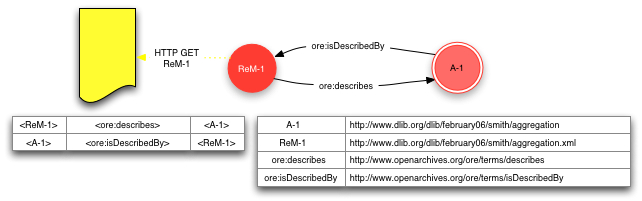
As described earlier, multiple Resource Maps MAY assert an
ore:describes relationship with the same URI-A as the
object of the triple. In the case where there are multiple Resource
Maps, each Resource Map SHOULD assert a triple with the
ore:isDescribedBy predicate (the inverse of
ore:describes) expressing a relationship with each other
authoritative Resource Map. These triples make alternate
serializations of a Resource Map visible to clients.
The figure below illustrates the existence of multiple Resource
Maps and the use of the ore:isDescribedBy predicate. Note
that the illustrated assertions are expressed by ReM-1 in
the figure.
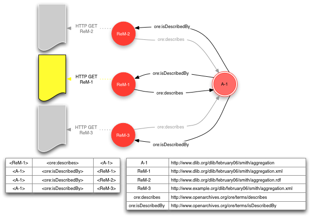
A Resource Map MUST express minimal metadata properties about the Resource Map. Those metadata properties are:
dcterms:creator predicate, with an object that MUST be a reference to a Resource of type http://purl.org/dc/terms/Agent. This MAY then be the subject of the following triples:
foaf:name and an object that is a text string containing some descriptive name of the authoring authority.foaf:mbox and an object that is a URI that is the email address of the authoring authority.dcterms:modified term. This date-timestamp
MUST be updated when the triples asserted within the Resource Map, and expressed in the serializations of that Resource Map, change so that
consuming clients of the can determine appropriate actions.A Resource Map MAY include additional metadata properties about the Resource Map. Examples of additional metadata properties are:
dc:rights term. (Note rights information for the Resource Map is distinct from that for the Aggregation. The latter MAY be described separately as described below.) dcterms:created term.A Resource Map MAY assert metadata properties about the
Aggregation. These metadata properties MAY be defined by a variety of
vocabularies. A common metadata property is the identity of the
authoring authority (human, organization, or agent) of the
Aggregation, using the dcterms:creator
predicate.
The figure below shows an RDF Graph expressed by a Resource Map that includes metadata properties about Resource Map and Aggregation. Note that aspects of the graph already described are grayed-out to emphasize the concepts introduced by the figure. This convention will be used for the remainder of this document along with other simplifications to make the figures easier to read.
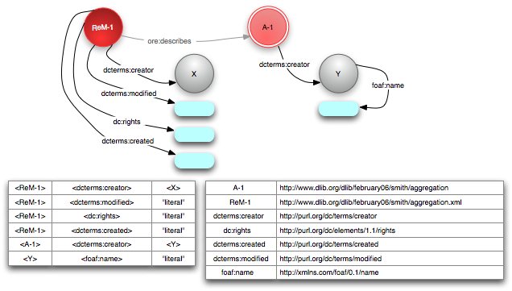
A Resource Map MAY include one or more triples with the
ore:aggregates predicate. Each asserts that the object of
the predicate identified by URI-AR is an
Aggregated Resource of the subject
identified by URI-A. A URI-AR MUST NOT be the same as the URI-A of
the Aggregation that is the subject of the ore:aggregates
predicate.
The ore:aggregates relationship defines that the
Resource denoted by the subject is a Resource of type
ore:Aggregation. Therefore, the explicit inclusion
in the Resource Map of a triple asserting the type is OPTIONAL.
A Resource Map MAY include one or more triples with the
ore:isAggregatedBy predicate to assert that an Aggregated
Resources is a constituent of other
Aggregations.
The figure below shows the RDF Graph with the addition of triples
with the ore:aggregates predicate. This subgraph of
the RDF Graph, rooted in the Aggregation with one or more
ore:aggregates relationships to Aggregated Resources, is
known as the Aggregation
Graph.As described earlier, all authoritative Resource
Maps describing the same Aggregation MUST assert the same Aggregation
Graph.
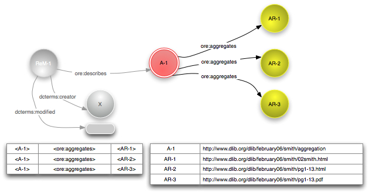
For a Resource Map http://example.org/ReM-1, the
Aggregation Graph is defined by the following SPARQL query [SPARQL].
PREFIX ore: <http://www.openarchives.org/ore/terms/>
CONSTRUCT { ?a ore:aggregates ?ar1 . }
WHERE { <http://example.org/ReM-1> ore:describes ?a .
?a ore:aggregates ?ar1 . }
A Resource Map MAY include one or more triples, with URI-A as the
subject, which assert that the Aggregation is a Resource with content
that is similar to another Resource. The predicate MAY be either
rdfs:seeAlso or its sub-property
ore:similarTo. The predicate actually used depends on the
strength of the assertion of similarity.
The ore:similarTo relationship asserts that the
Aggregation has similar intellectual content to the Resource
identified by the object of the triple. An example of the use of
ore:similarTo in the scholarly communication context is
the relationship between an Aggregation and a Resource with
non-protocol-based URI like a Digital Object Identifier [DOI] or an info URI [INFO].
An example of the use of the weaker rdfs:seeAlso in a
Resource Map is the relationship between two Aggregations that have an
ore:similarTo relationship to the same DOI.
The use of ore:similarTo and rdfs:seeAlso
predicates in a Resource Map is shown in the figure below.
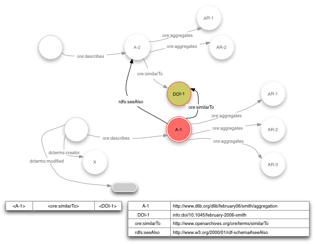
A Resource Map MAY include additional triples that assert properties about the Resource Map, Aggregation, Aggregated Resources, or other related Resources or Literals. The RDF graph produced by the addition of these triples MUST be connected. Formally that means that all nodes in the graph MUST be reachable via a traversal that begins at the node denoting the Resource Map and follows the edges corresponding to the predicates expressed in the triples.
Some appropriate uses for additional relationships are:
rdf:type, and an object that is the URI of a
Class defined by any vocabulary.The scope of these additional assertions corresponds to the global manner in which RDF statements are interpreted. That is, the meaning of these additional triples are not constrained or altered by their "assertion context" in a Resource Map. Each assertion is essentially independent, and therefore a triple with subject URI-AR is a statement about that Resource without reference to its existence in the respective Aggregation. Assertions about Resources contextualized by the Aggregation via the use of Proxies are described in section 5.3.1.
The figure below shows the RDF Graph with the addition of triples expressing type semantics and other relationships to the Aggregation Graph.
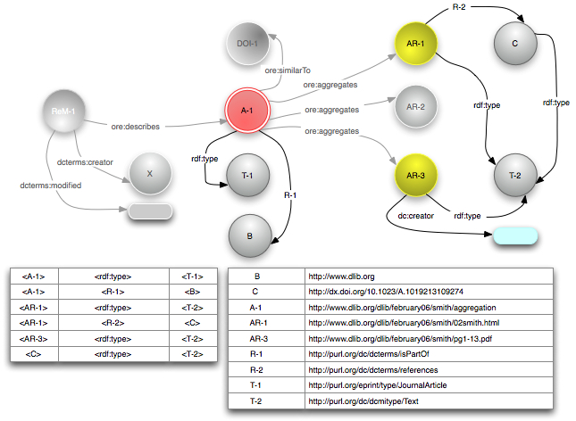
This specification has thus far included the mechanisms for describing an individual Aggregation. This section describes mechanisms by which one Resource Map MAY assert relationships between Aggregated Resources and other Resource Maps or Aggregations.
A Resource Map MAY include one or more triples with the
ore:isAggregatedBy predicate to assert that an Aggregated
Resources is a constituent of other Aggregations.
A use case is flickr, in which
it is possible for a picture to be a member of multiple sets. The
Resource Map describing a set might include information about other
set memberships of its constituent pictures. The figure below shows
three Aggregations, A-1, A-2, and
A-3, corresponding to the three sets in flickr. All
include some image, AR-3, as an Aggregated Resource. The
Resource Map ReM-3, which describes the flickr set
A-3, includes triples with the predicate
ore:isAggregatedBy, asserting that AR-3 is
constituent of the sets denoted by the Aggregations A-1
and A-2.
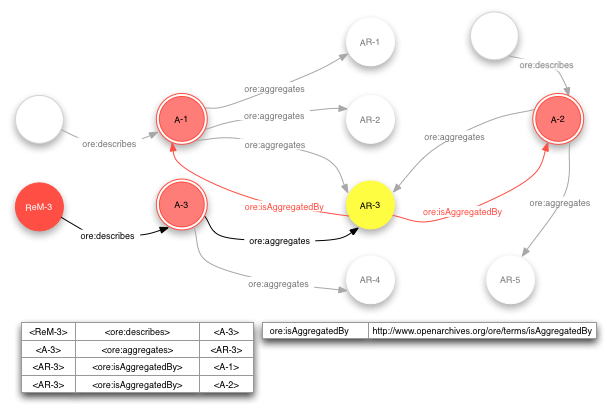
As stated earlier, any Resource can be an Aggregated Resource in some Aggregation. Because an Aggregation is itself a Resource, it can be an Aggregated Resource in some other Aggregation. The result is then recursive nesting of Aggregations. Note that this nesting MUST be expressed in multiple Resource Maps, since one Resource Map MUST describe only one Aggregation.
A Resource Map that asserts another Aggregation as an Aggregated
Resource MAY assert an ore:isDescribedBy relationship
between this Aggregated Resource and a Resource Map describing the
other Aggregation. This informs clients of the Resource Map of the
nesting.
Note that this use of the ore:isDescribedBy predicate
has the same semantics as described
earlier. The predicate asserts that the
subject of the triple, which is an Aggregation, is described by the
object of the triple, which is a Resource Map.
An example of a nested Aggregation is a journal consisting
of multiple issues, each of which is an Aggregation of
multiple articles, each of which may be an Aggregation in its
own right. The figure below illustrates nested Aggregations,
omitting some details of previous figures (e.g. metadata,
typing). Aggregation A-1, described by
ReM-1, has constituents AR-1,
AR-2 and AR-3, which are themselves
Aggregations. Each of these "aggregated Aggregations"
is described by a corresponding Resource Map (ReM-2,
ReM-3, and ReM-4) which describes the
Aggregated Resources and other aspects of these Aggregations. The
sub-graphs associated with these other Resource Maps are intentionally
grayed out to emphasize the fact that the triples relevant to this
example are exclusive to ReM-1.
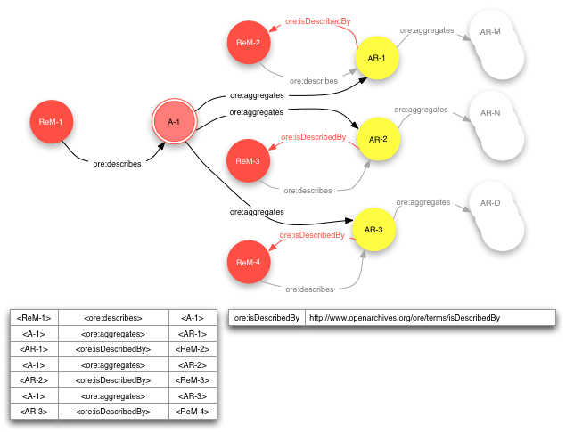
This specification has thus far used the URI-AR of an Aggregated Resource as the subject or object of triples. As described earlier, a URI-AR is not specific to the Aggregation — an individual URI-AR MAY be asserted within multiple Aggregations and MAY be used independent of any Aggregation. Thus, the use of URI-AR as the subject or object of triples does not imply any association with one Aggregation, or even with any Aggregation at all.
In some cases it is useful to assert relationships to Aggregated Resources in a manner specific to the Aggregation context. These relationships may be among Aggregated Resources or between Aggregated Resources and Resources external to the Aggregation. A URI distinct from the URI-AR is then necessary.
This section describes the notion of a Proxy, which is a Resource that "stands for" an Aggregated Resource in a manner that is specific to one Aggregation. The URI-P of this Proxy is then available for use in triples where the intended semantics is a relationship specific to the Aggregated Resource in the context of the respective Aggregation. Note that the assertion of Proxies is OPTIONAL and unnecessary if context-specific assertions are not needed.
The URI-P of the Proxy MUST be unique to the Aggregation. A Resource Map MUST assert two triples to associate the Proxy with the Aggregation and Aggregated Resource.
ore:proxyFor, and the URI of the associated Aggregated Resource as the object.ore:proxyIn, and the URI of the associated Aggregation as the object.A Resource Map MUST assert only one of each of these pairs of triples for each Proxy. All authoritative Resource Maps for an Aggregation MUST assert the same Proxies.
The remainder of this section describes use cases for Proxies and how to express them in the Resource Map
An example of the use of Proxies for relationships among Aggregated
Resources is the assertion of sequencing between Aggregated Resources,
expressing an ordered list where AR-1 follows
AR-2 which follows AR-3. Without any
sequencing information, the order of Aggregated Resources can not be
inferred — they form an unordered set. It would not be
legitimate for the Resource Map to express this sequencing by
asserting a triple of the sort <AR-1> <hasNext>
<AR-2>, since this fact is only true in the context of
the specific Aggregation, and is not a "global" fact. As
noted earlier, in RDF the meaning of triples
are not constrained or altered by their "assertion context"
in a Resource Map. Each assertion is essentially independent, and
therefore a triple with subject or object URI-AR is a statement about
that Aggregated Resource without reference to its existence in the
respective Aggregation. Therefore, a relationship such as the
previously mentioned "sequence" must be expressed in terms
of Proxies that denote Aggregated Resources contextualized by a
specific Aggregation
The following figure illustrates how to express this
Aggregation-specific sequencing via the definition of proxies and
assertion of related triples in a Resource Map. The hypothetical
predicate xyz:hasNext used in the figure indicates a
sequencing relationship between the two Aggregated Resources. The
Resource Map ReM-1 defines two Proxies P-1
and P-2. It also asserts triples with the
ore:proxyFor and ore:proxyIn predicates that
associate the Proxies with the respective Aggregated Resource and with
the Aggregation. These Proxies are then the subject and object of the
xyz:hasNext predicate, asserting the sequencing
relationship in the context of the Aggregation.
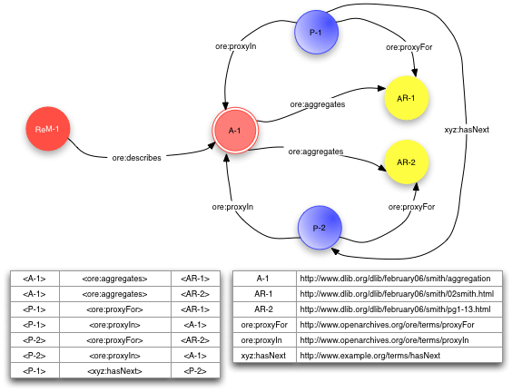
A Proxy can be the subject or object of triples asserted elsewhere, with semantics that the relationship asserted by the triples are specific to the Aggregated Resources contextualized by the Aggregation.
The figure below illustrates an example of this use of a Proxy. In
the example, the Aggregation A-1 may be a collection of
best scholarly papers found on the web about some selected topic.
AR-1 is one of these selected papers. A citation to that
paper, asserted by the triple <URI-2> <xyz:cites>
<AR-1>, carries no semantics about the selection of the
paper in the "best papers" collection, because the URI
AR-1 is simply the identity of the paper. However, the
triple <URI-1> <xyz:cites> <P-1>, where
P-1 is asserted by the Resource Map to be the Proxy for
AR-1, is semantically a citation to that paper as a
constituent of the "best papers" collection.
The assertion of Proxies is OPTIONAL. This example demonstrates that it MAY make sense for an agency creating Resource Maps to assert these Proxies to provide appropriate link targets for outside clients.
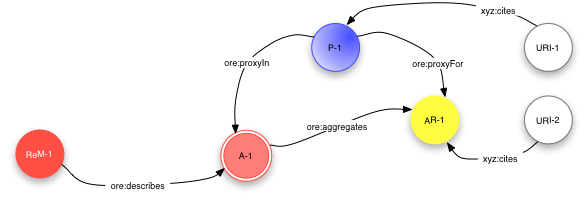
As described earlier, the
ore:isAggregatedBy predicate asserts that an Aggregated
Resource in one Aggregation is also an Aggregated Resource in another
Aggregation. In fact, one Aggregated Resource MAY be in multiple
Aggregations, and therefore it MAY be the subject of multiple
ore:isAggregatedBy triples. In applications such as
scholarly communication there is a need for a stronger relationship
indicating lineage, which indicates
that an Aggregated Resource originated or was sourced from another
Aggregation. Lineage or provenance is one basis of integrity in
scholarly communication.
A Resource Map MAY assert triples with the predicate
ore:lineage to express this notion. The subject of
ore:lineage MUST be a Proxy specific to the Aggregation
and the object MUST be a Proxy specific to another Aggregation. Both
the subject and object Proxy Resource MUST be proxies for the same
Aggregated Resource. In other words, the Resource Map for subject
Proxy MUST contain a triple <P-1> <ore:proxyFor>
<AR-1> and the Resource Map for object Proxy MUST contain
a triple <P-2> <ore:proxyFor> <AR-1>
where AR-1 is the same in both triples. One Proxy MUST
NOT be the subject of more than one ore:lineage
relationships expressed in a Resource Map.
The following figure illustrates the use of
ore:lineage. Aggregation A-1 is an eScience
result aggregating, with other Resources not shown, some data set,
AR-1. Aggregation A-2 includes the same data
set. Both Resource Maps establish proxies for that Aggregated
Resource, P-1 in A-1 and P-2 in
A-2, creating Aggregation-specific URIs for the data
set. ReM-2 also asserts the triple
<P-2> <ore-lineage>
<P-1> to express the origin or provenance of the
data set in Aggregation A-1.
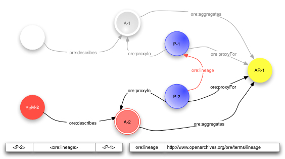
The following table summarizes the constraints on the structure of an RDF Graph that serves as a Resource Map by specifying the minimum and maximum expected occurrences of Triples of varying forms.
The convention used in the table is that
ReM-1 is the URI of this Resource MapReM-i is the URI of another Resource MapA-1 is the URI of the Aggregation described by the Resource Map ReM-1Agent is the URI of an AgentAR-j is the URI of a resource which is aggregated into Aggregation A-1URI-Subject is the URI of a ResourceURI-Property is the URI of a type of RelationshipURI-Object is the URI of a ResourceA-k is the URI of an Aggregation other than the Aggregation described by the Resource Map ReM-1P-j is the URI of a Proxy for a resource AR-j aggregated into the Aggregation A-1P-m is the URI of a Proxy for a resource AR-m aggregated into an Aggregation other than the Aggregation described by the Resource Map ReM-1| Subject | Predicate | Object | Occurs (Min, Max) |
Note |
|---|---|---|---|---|
ReM-1 |
ore:describes |
A-1 |
(1, 1) |
Relationship between Resource Map and Aggregation (4.1) |
A-1 |
ore:isDescribedBy |
ReM-i |
(1, *) |
Relationship between Resource Map and Aggregation (4.1) |
ReM-1 |
rdf:type |
ore:ResourceMap |
(0, 1) |
Typing of Resource Map (4.1) |
ReM-1 |
dcterms:creator |
Agent | (1, *) |
Metadata about Resource Map (Required) (4.2) |
ReM-1 |
dcterms:modified |
literal | (1, 1) |
Metadata about Resource Map (Required) (4.2) |
ReM-1 |
URI-Property | literal or URI-Object | (0, *) |
Metadata about Resource Map (Optional) (4.2) |
| URI-Subject | URI-Property | ReM-1 |
(0, *) |
Metadata about Resource Map (Optional) (4.2) |
| Agent | foaf:name |
literal | (0, 1) |
Metadata about Creator of Resource Map or Aggregation (Optional) (4.2) |
| Agent | foaf:mbox |
URI-Object | (0, 1) |
Metadata about Creator of Resource Map or Aggregation (Optional) (4.2) |
A-1 |
ore:aggregates |
AR-j |
(0, *) |
Relationship between Aggregation and aggregated Resource (4.3) |
A-1 |
rdf:type |
ore:Aggregation |
(0, 1) |
Typing of Aggregation (4.3) |
A-1 |
ore:similarTo |
URI-Object |
(0, *) |
Relationships between the Aggregation and similar resources (4.4) |
A-1 |
rdfs:seeAlso |
URI-Object |
(0, *) |
Relationships between the Aggregation and similar resources (4.4) |
A-1 |
URI-Property | literal or URI-Object | (0, *) |
Other properties of the Aggregation (4.2)/Relationships of Aggregation to Other Resources (4.5) |
| URI-Subject | URI-Property | A-1 |
(0, *) |
Relationships of Aggregation to Other Resources (4.5) |
AR-j |
URI-Property | literal or URI-Object | (0, *) |
Relationships of aggregated Resource to Other Resources (4.5) |
| URI-Subject | URI-Property | AR-j |
(0, *) |
Relationships of aggregated Resource to Other Resources (4.5) |
| URI-Subject | URI-Property | URI-Object | (0,*) |
Additional metadata in the Resource Map (4.5)
|
AR-j |
ore:isAggregatedBy |
A-k |
(0, *) |
Aggregated Resource as constituent of another Aggregation (5.1) |
AR-j |
ore:isDescribedBy |
ReM-i |
(0, *) |
Nesting Aggregations (5.2) |
P-j |
ore:proxyFor |
AR-j |
(0, 1) |
Relationship between Proxy and aggregated Resource (5.3) |
P-j |
ore:proxyIn |
A-1 |
(0, 1) |
Relationship between Proxy and Aggregation (5.3) |
P-j |
URI-Property | P-m |
(0, *) |
Relationships between Proxies (5.3.1) |
| URI-Subject | URI-Property | P-j |
(0, *) |
Proxy as target of Relationships (5.3.2) |
P-j |
URI-Property | literal or URI-Object | (0, *) |
Proxy as subject of Relationships (5.3.2) |
P-j |
ore:lineage |
P-m |
(0, *) |
Lineage Relationship between Proxies (5.3.3) |
The UML diagram below shows the relationships between the key entities in the ORE model.

This document is the work of the Open Archives Initiative. Funding for Open Archives Initiative Object Reuse and Exchange is provided by the Andrew W. Mellon Foundation, Microsoft, and the National Science Foundation. Additional support is provided by the Coalition for Networked Information.
This document is based on meetings of the OAI-ORE Technical Committee (ORE-TC), with participation from the OAI-ORE Liaison Group (ORE-LG). Members of the ORE-TC are: Chris Bizer (Freie Universität Berlin), Les Carr (University of Southampton), Tim DiLauro (Johns Hopkins University), Leigh Dodds (Ingenta), David Fulker (UCAR), Tony Hammond (Nature Publishing Group), Pete Johnston (Eduserv Foundation), Richard Jones (Imperial College), Peter Murray (OhioLINK), Michael Nelson (Old Dominion University), Ray Plante (NCSA and National Virtual Observatory), Rob Sanderson (University of Liverpool), Simeon Warner (Cornell University), and Jeff Young (OCLC). Members of ORE-LG are: Leonardo Candela (DRIVER), Tim Cole (DLF Aquifer and UIUC Library), Julie Allinson (JISC), Jane Hunter (DEST), Savas Parastatidis (Microsoft), Sandy Payette (Fedora Commons), Thomas Place (DARE and University of Tilburg), Andy Powell (DCMI), and Robert Tansley (Google, Inc. and DSpace)
We also acknowledge comments from the OAI-ORE Advisory Committee (ORE-AC).

This work is licensed under a Creative Commons Attribution-Share Alike 3.0 Unported License.
Use of this page is tracked to collect anonymous traffic data. See OAI privacy policy.